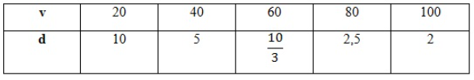

πclass — o principal pilar do seu aprendizado


Razão é a relação entre duas grandezas, expressa por uma divisão. Quando queremos comparar dois valores, podemos estabelecer uma razão entre eles.
A Proporção é a igualdade entre duas razões. Duas razões são proporcionais quando o resultado da divisão entre o numerador e o denominador da primeira razão é igual ao resultado da divisão da segunda.
Por exemplo, se a receita de um bolo pede três xícaras de farinha de trigo para cada seis ovos e o cozinheiro gostaria de fazer três bolos, é necessário utilizar os instrumentos de proporcionalidade, veja:

Se sabemos que a cada três xícaras de farinha de trigo são feitos três bolos, serão necessárias nove porções de farinha.
3.3 = 9
Então se para cada seis ovos conseguimos fazer uma receita, para três, usaremos dezoito ovos.
3.6 = 18
Vamos ao exemplo: se a razão entre a idade de duas pessoas é 3:1 e a razão entre a altura delas é também 3:1, temos uma proporção. A proporção estabelece uma correspondência constante entre duas grandezas diferentes.
Duas grandezas são diretamente proporcionais quando, ao variar uma grandeza, a outra também varia na mesma razão. Por exemplo: se uma grandeza dobra, a outra também irá dobrar. Se uma grandeza reduzir-se à metade, a outra também terá o mesmo efeito.
Duas grandezas são inversamente proporcionais quando, ao variar uma grandeza, a outra também variará na razão inversa. Se uma grandeza dobrar, a outra se reduzirá a metade. Se uma grandeza triplicar, a outra será dividida em três.
Exemplo: A distância entre duas cidades é de 200 km. Se uma pessoa percorrer a uma velocidade média v(km/k), o tempo de uma viagem de uma cidade a outra será d(em horas). 
Seleção de videoaulas sobre esse assunto com ótimos professores que os ofertam gratuitamente na internet:
1. (ENEM) Um dos grandes problemas enfrentados nas rodovias brasileiras é o excesso de carga transportada pelos caminhões. Dimensionado para o tráfego dentro dos limites legais de carga, o piso das estradas se deteriora com o peso excessivo dos caminhões. Além disso, o excesso de carga interfere na capacidade de frenagem e no funcionamento da suspensão do veículo, causas frequentes de acidentes. Ciente dessa responsabilidade e com base na experiência adquirida com pesagens, um caminhoneiro sabe que seu caminhão pode carregar, no máximo, 1500 telhas ou 1200 tijolos. Considerando esse caminhão carregado com 900 telhas, quantos tijolos, no máximo, podem ser acrescentados à carga de modo a não ultrapassar a carga máxima do caminhão?
2. (ENEM) A figura apresenta dois mapas, em que o estado do Rio de Janeiro é visto em diferentes escalas.
Há interesse em estimar o número de vezes que foi ampliada a área correspondente a esse estado no mapa do Brasil. Esse número é
Sabemos que:
Se 1500 telhas equivalem a 1200 tijolos, então:
1 telha=1200/1500=0,8 tijolo
900 telhas=900×0,8=720 tijolos
Ou seja, a carga atual do caminhão equivale a 720 tijolos.
Como o limite é 1200 tijolos
1200−720=480 tijolos
A escala diminuiu de 1:25.000.000 para 1:4.000.000. Isso significa que o mapa foi ampliado.
Fator de ampliação linear = 25.000.000/4.000.000=6,25
Como estamos tratando de área, o fator é ao quadrado:
6,25^2=39,06
Resposta: A área foi ampliada aproximadamente 39 vezes.